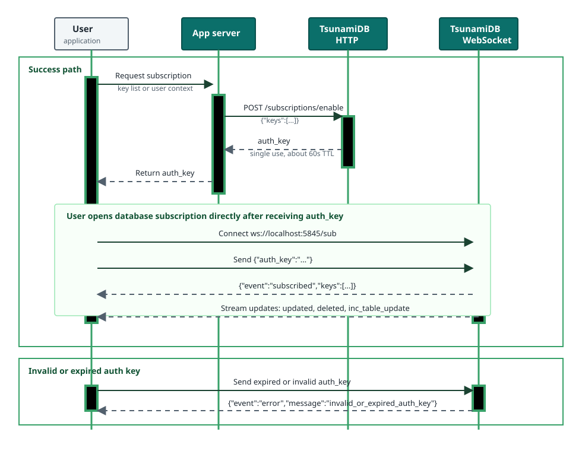

Subscriptions
Subscriptions use private HTTP endpoints to mint auth keys and a public WebSocket endpoint to stream real-time key events.
Flow
- Your trusted backend calls
POST /subscriptions/enablewith a list of keys. - TsunamiDB returns a one-time
auth_keyvalid for about 60 seconds. - Your client connects to
ws://localhost:5845/suband sends{"auth_key":"..."}. - The socket receives
subscribed, then update/delete events for the authorized keys.
Example Communication Scheme
Recommended subscription communication pattern:

POST /subscriptions/enable
curl -X POST http://localhost:5844/subscriptions/enable \
-H "Content-Type: application/json" \
--data '{"keys":["user-1","event-feed"]}'Response:
{"auth_key":"uuid-value"}POST /subscriptions/disable
Removes active subscribers for one key and sends them an unsubscribed event.
curl -X POST http://localhost:5844/subscriptions/disable \
-H "Content-Type: application/json" \
--data '{"key":"user-1"}'WS ws://localhost:5845/sub
{"auth_key":"uuid-value"}Successful response:
{"event":"subscribed","keys":["user-1","event-feed"]}Event Types
| Event | Payload | Produced by |
|---|---|---|
updated | {"event":"updated","key":"...","data":"..."} | /save, /save_encrypted, Go Save, Go SaveEncrypted |
deleted | {"event":"deleted","key":"..."} | /free, /delete_inc, Go Free |
inc_table_update | {"event":"inc_table_update","key":"...","data":{"type":"add|insert|overwrite","new_data":{"id":"...","data":"..."}}} | /save_inc |
unsubscribed | {"event":"unsubscribed","key":"..."} | /subscriptions/disable |
error | {"event":"error","message":"invalid_or_expired_auth_key"} | Invalid or expired auth key. |
Do not expose
/subscriptions/enable and /subscriptions/disable directly to untrusted clients. Treat them as server-side endpoints.ai_keywords: subscriptions websocket auth_key enable disable subscribed updated deleted inc_table_update
source_files: servers/subscriptions/subServer.go